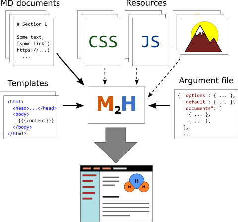
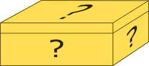

Overview
Overview
Overview

The program accepts the following artifacts as the input:
The program processes these artifacts and generates a set of static HTML pages that may represent a logically related documentation with a sidebar menu, navigation, index and other elements.
The following subsections describe the above artifacts in more details.
These texts comprise the main documentation content written by the author. They are written in the Markdown markup language. The Page content section describes the methods, tricks and elements that may be used in process of the content writing.
An HTML artifact that is generated out of a markdown text is not a complete HTML page. It's
just a fragment that must be put inside the <body>...</body> HTML element. A template may
be considered as an HTML page that doesn't have the main content but just specifies the place
(placeholder) where this content must be inserted.
See here for more details about templates and other placeholders that may be used in templates.
The argument file defines the set of input source files and different parameters for the following HTML documents generation. See here for more details.
Different resources, like CSS and images are not processed by the program. The program may just adjust the location of these resources while putting link on them into the certain pages. These are usually plugins that perform these adjustments.
The program doesn't restrict HTML code inside the Markdown texts. Particularly, these texts may contain JavaScript that will be translated unchanged into the generated HTML page. This must not be a problem for personal use but may be a security issue when converting and publishing source texts from untrusted third-parties. Click the image below to see how it may look like.
Tip
In case of worry first have a look at the source text by clicking at the "Source text" link ("</>") at the page top.
